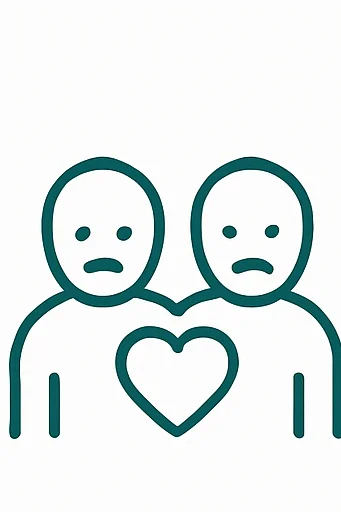
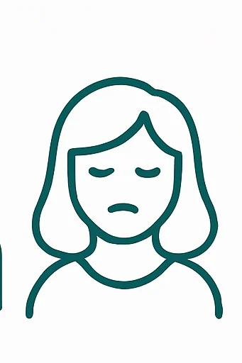
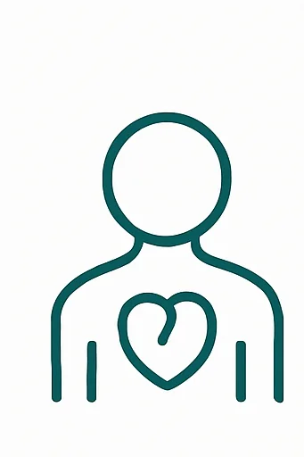
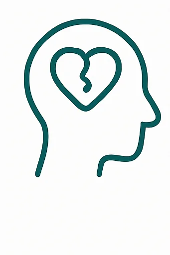
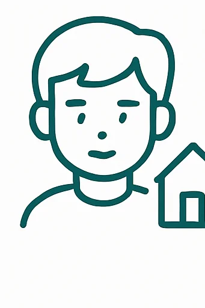
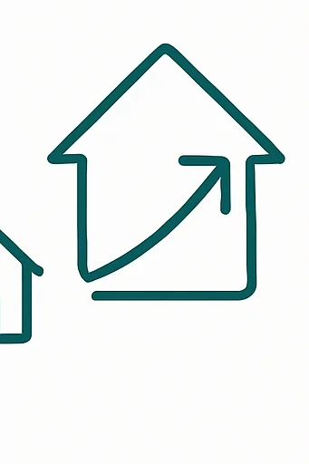

Sobre mim
Olá, meu nome é Amanda, sou psicóloga e psicanalista, e acompanho mulheres que estão em busca de sentido. Me encontro em especialização contínua em tudo o que envolve a vida psíquica da mulher nos dias de hoje. Atualmente, curso uma pós-graduação focada nisso e realizo outros diversos cursos, participações em grupos de estudos, entre outros eventos, para estar cada vez mais preparada para receber cada uma de vocês.Realizo atendimentos exclusivamente online, oferecendo um espaço de escuta e reflexão, onde é possível olhar para o que dói com cuidado e afeto.
Um pouco da minha história
Sonho com essa profissão desde os meus 11 anos, antes mesmo de entender o que isso significava.
Aos 15, eu acreditava profundamente nas pessoas, na vida e na possibilidade de encontrar sentido mesmo nas pequenas coisas.
Via o mundo com olhos de caleidoscópio, como se algo maior colorisse a existência, mesmo quando tudo parecia cinza.
Com o tempo, vivi experiências que me afastaram daquela menina de 11 anos e daquela garota de 15.
Em certos momentos, me formar parecia um sonho distante; mas a ideia de desistir do que sempre desejei era ainda mais insuportável.
Foi nesse percurso, entre quedas e recomeços, que encontrei, na psicologia e na psicanálise, uma forma de continuar acreditando.
Hoje, compreendo que cuidar é também ajudar o outro a reencontrar suas próprias cores.
É o que faço todos os dias: escutar com cuidado, presença e afeto, ajudando cada mulher que chega até mim a reconhecer, dentro de si, o brilho dos seus próprios olhos de caleidoscópio.
Minha abordagem
Psicanálise como caminho de cuidado
Trabalho com os olhos da psicanálise, entendendo que cada história é única e não cabe em respostas prontas. Em sessão, o foco não é “consertar” alguém, mas criar um espaço onde você possa falar livremente, inclusive sobre aquilo que muitas vezes não encontra lugar, espaço e segurança em outros contextos.
O que isso significa na prática?
Na análise, cada palavra importa. Cada uma das suas experiências, seus sofrimentos, dúvidas, angústias, tristezas, alegrias e desejos são acolhidos com cuidado, sigilo e um colo afetuoso para que, aos poucos, possamos compreender o que está em jogo na sua maneira de viver, se relacionar e sentir.
Não se trata de receber conselhos prontos ou fórmulas mágicas, mas de construir, juntas, novas possibilidades de olhar para a sua história e de ressignificar sua vivência, além de encontrar novas formas de se posicionar diante da vida.
Caminho terapêutico
Como posso te acompanhar nesse processo:
Muitas vezes, somos atravessadas por incertezas, dores, vazios e angústias que ultrapassam nosso entendimento sobre nós mesmas e sobre o sentido da existência. A análise é um caminho honesto de encontro consigo mesma: um convite a olhar para o espelho subjetivo, a reconhecer os próprios impasses e a se conectar com sua essência de maneira mais autêntica e plena.
Estaremos juntas, olhando para tudo isso, atentas àquilo que precisa de contorno. Daremos, juntas, palavras para representar tudo o que você sente, e você não estará sozinha nessa jornada, o que vai dar a você o amparo que talvez você nunca tenha recebido em sua história de vida e que pode curar dores invisíveis e sofrimentos não vistos.
O espaço da psicoterapia (Análise):
Chamamos de setting analítico o espaço inconsciente que se constrói na relação entre psicólogo e paciente. Esse espaço, onde você poderá trazer tudo o que seu coração sentir que precisa de atenção, é reservado apenas a você.
Tudo o que conversarmos é estritamente sigiloso, algo que pode te deixar mais confortável do que em uma conversa com amigos, por exemplo. Além de todo o repertório teórico que me acompanha, esse espaço é humano, onde iremos nos relacionar de forma humana, real e profunda.
No espaço de análise, você poderá, talvez, reconstruir sua trajetória psíquica, entrando em contato e cuidando de questões muito primitivas, que você carrega desde muito pequena. E isso dará a você a oportunidade de preencher lacunas psíquicas que se registraram em seu inconsciente e impactam diretamente sua vida e sua forma de sentir e ser.
Alguns temas de trabalho
Questões que podem aparecer por aqui
Essa lista não esgota tudo o que você pode trazer para a análise, mas criei ela para que você tenha um norte ao acessar esse site, de alguns temas que podemos atravessar.
Temas que atravessam a clínica
No dia a dia com mulheres, aparecem questões ligadas a relacionamentos, vínculos, autoestima, histórias de infância e tantas outras experiências que, às vezes, são vividas em silêncio.
A ideia é que, aqui, essas histórias possam ser escutadas com atenção, cuidado e responsabilidade clínica, para que não precisem mais ser carregadas sozinhas.

Relacionamentos e vínculos Dinâmicas afetivas, dificuldade de colocar limites, relações que machucam, medo de ficar só.
Autoestima e autopercepção Sentimentos de inadequação, autoexigência, comparação constante, dificuldade em reconhecer o próprio valor.
Ansiedade, angústia e vazio Preocupações intensas, sensação de estar sempre devendo algo, dificuldade em descansar por dentro.
Luto e perdas Encerramentos de ciclos, mudanças importantes, experiências de separação e perdas simbólicas.
Infância e família Histórias de infância emocionalmente negligenciada, lares marcados por críticas constantes ou pouco acolhimento.
Carreira e projetos de vida Dúvidas sobre caminhos profissionais, sensação de estar perdida, dificuldade em se apropriar do que se deseja para si.Dúvidas frequentes
Perguntas que podem surgir antes de começar
Não, você não precisa chegar pronta; a análise é justamente o lugar onde poderemos construir algo que te dê palavras sobre o que sente e vive. Você só precisa ser você.
Não existe um tempo exato, pois cada pessoa tem o seu processo de forma tão única e singular que seria impossível realizar essa travessia psíquica com tempo determinado.
O atendimento acontece por videochamada, através do Google Meet. Eu irei te enviar via WhatsApp um link para acessar a sessão. Estarei acompanhando sua entrada caso surjam dificuldades. Você pode fazer com seu celular, computador ou tablet.
As sessões duram 40 minutos e iremos nos encontrar uma vez por semana. Porém, isso pode ser conversado para adaptarmos os encontros a cada caso.
Os atendimentos são feitos com horário e data marcados com antecedência para que eu possa organizar a agenda para te receber com inteireza. Iremos encontrar um horário que faça sentido pra você. Os atendimentos são de segunda a sexta-feira.
Ficou alguma dúvida?
Me chame para esclarecermosContato
Se você sentiu que algo daqui te toca
Se em algum ponto você se reconheceu nas palavras ou temas que aparecem aqui, podemos conversar com calma sobre a possibilidade de acompanhamento.
O primeiro contato pode ser apenas para tirar dúvidas e entender melhor como o processo funciona. Você não precisa chegar pronta, só precisa chegar como está.
- +55 (16) 99275-2424
- @psiamanda.dualattka